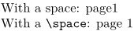

Syntax (autogenerated)
| \space |
Syntax
| \space |
Description
A macro that expands to a space, defined very simply as
\def\space{ }
Useful when an ordinary space would get gobbled, as is common when macros are involved.
Example
-
\def\text{page} With a space: \text \pagenumber \crlf With a \tex{space}: \text\space\pagenumber
gives
- 
See also
Help from ConTeXt-Mailinglist/Forum
All issues with: